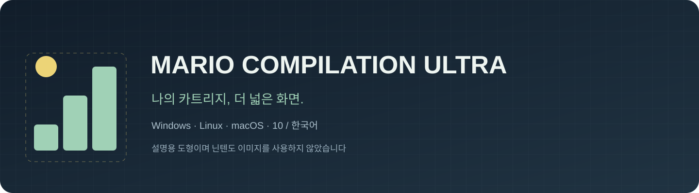
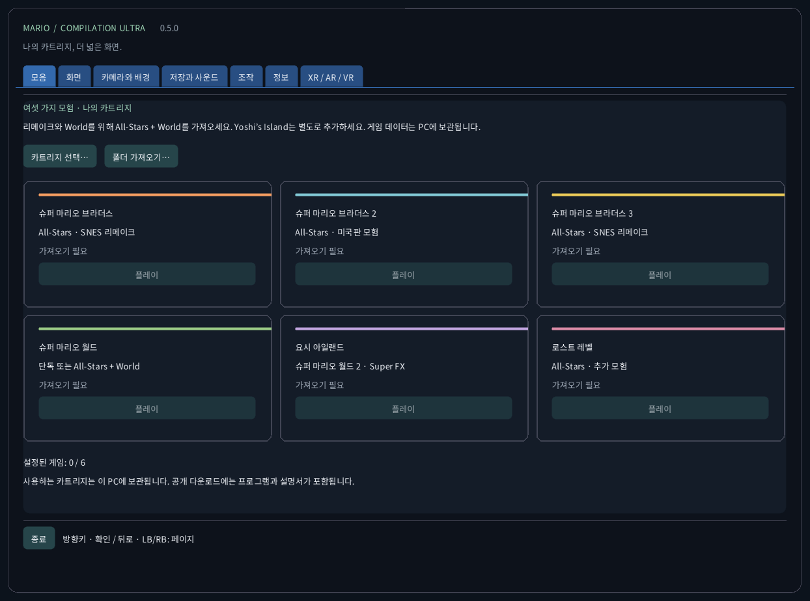
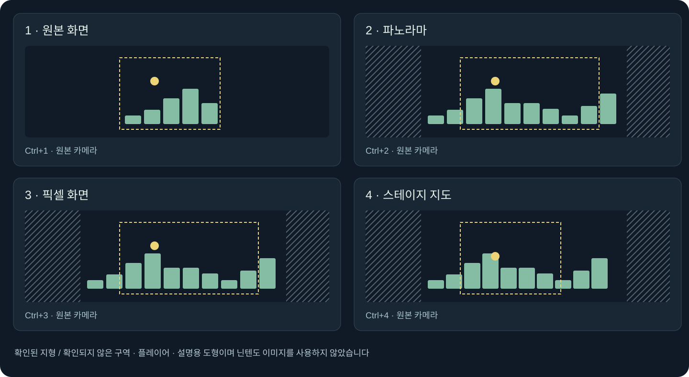
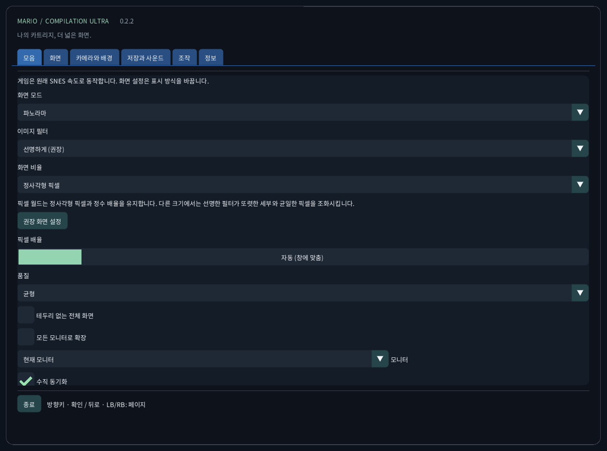
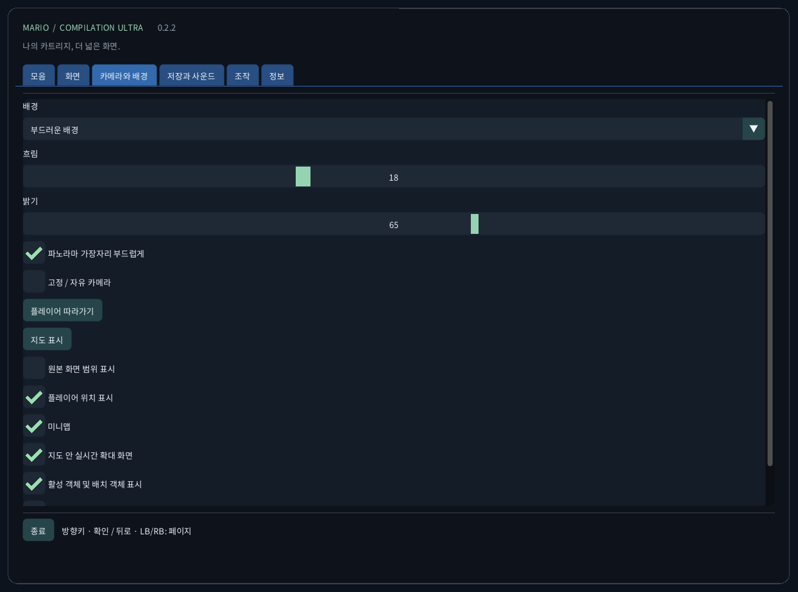
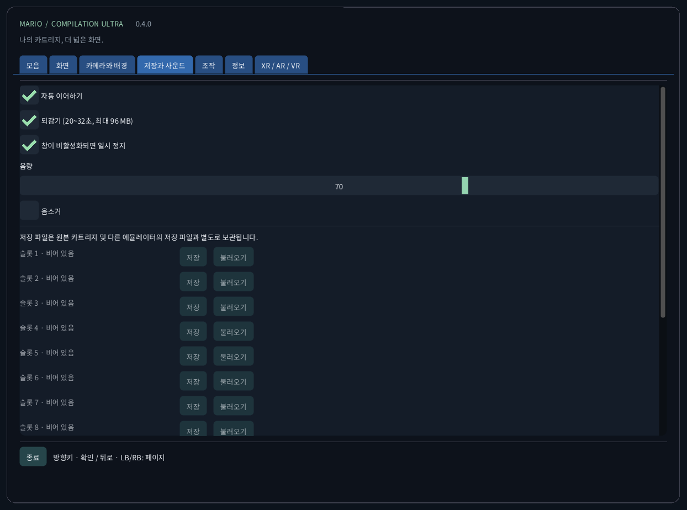
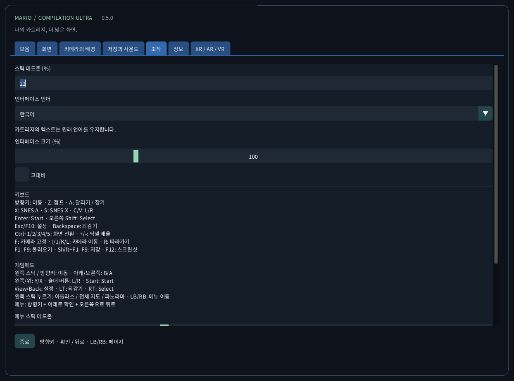
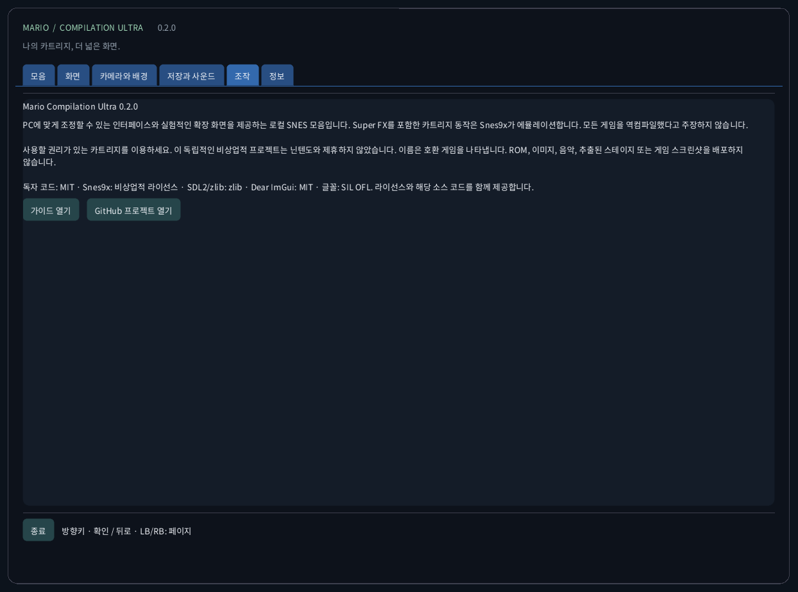

Mario Compilation Ultra 0.2.2
PC에 맞게 조정할 수 있는 인터페이스와 실험적인 확장 화면을 제공하는 로컬 SNES 모음입니다. Super FX를 포함한 카트리지 동작은 Snes9x가 에뮬레이션합니다. 모든 게임을 역컴파일했다고 주장하지 않습니다.
다운로드와 바탕 화면에서 실행다운로드와 바탕 화면에서 실행
- 컴퓨터에 맞는 ZIP을 모두 풀어 주세요. 실행 파일, SDL, 리소스와 가이드는 함께 보관합니다. Windows는 MarioCompilationUltra.exe, Linux는 Play.sh, Mac은 앱을 실행합니다.
- 카트리지 선택, 폴더 가져오기 또는 끌어놓기로 자신의 .sfc, .smc, 카트리지 하나가 든 ZIP을 가져옵니다. 선택 창은 앱의 데이터 폴더에서 열립니다. 호환 카트리지를 이 폴더에 직접 넣으면 다음 실행 때 자동으로 인식됩니다.
- All-Stars + Super Mario World에는 마리오1, 미국판 마리오2, 마리오3, World와 The Lost Levels가 들어 있습니다. Yoshi’s Island는 별도로 추가합니다. 플레이를 선택하고 원래 제목 화면에서 Enter 또는 Start를 누르세요. 데모 중이면 한 번 더 누릅니다.
Windows에서는 Install-Windows.ps1로 전체 패키지를 사용자 Programs 폴더에 복사하고 바로 가기를 만듭니다. Linux에서는 Install-Linux.sh로 이 폴더를 메뉴와 바탕 화면에 등록합니다. Mac에서는 앱을 Applications로 옮기고 별칭을 만듭니다. 선택한 휴대용 폴더는 그대로 유지하세요.
Windows: powershell -NoProfile -ExecutionPolicy Bypass -File .\Install-Windows.ps1 Linux: sh ./Install-Linux.sh

패키지와 검증
- Windows x64: 로컬 바탕 화면 실행과 카트리지 구동 확인. 자동 테스트도 실행합니다.
- Linux x64: 자동 빌드 및 ROM 없는 검사. 실제 Linux 데스크톱에서 게임은 테스트하지 않았습니다.
- macOS Intel x64 및 Apple Silicon arm64: 실험용, 실제 Mac에서 테스트하지 않았습니다. 자동 환경에서 빌드와 ROM 없는 화면을 검사합니다. 임시 서명이며 공증되지 않았습니다. 실제 기기의 컨트롤러, 소리, 그래픽과 Gatekeeper는 확인하지 않았습니다.
화면 모드

권장 화면: 파노라마, 자동 확대, 선명한 필터, 정사각형 픽셀, 부드러운 가장자리와 어두운 주변 배경. 화면 → 권장 화면 설정은 언어, 소리, 저장 데이터를 바꾸지 않습니다. 최근접 픽셀, 부드러운 필터와 TV 4:3도 선택할 수 있습니다. 픽셀 월드는 정수 배율과 정사각형 픽셀을 유지합니다. 주사선은 게임의 행을 따르며 모아레를 막기 위해 2배 미만에서는 꺼집니다.
World 지도는 현재 불러온 영역을 보여 줍니다. 다른 일반 확장 장면은 이동 중 관찰한 지형을 기록합니다. 알 수 없는 영역에는 주변 배경이 보입니다. 지도는 해석한 지형을 보여 주고 더 큰 실시간 확대 화면으로 플레이할 수 있습니다. 원래 카메라 밖의 효과와 스프라이트는 다를 수 있으며 카메라 밖 물체는 시뮬레이션하지 않습니다. 특수 투영은 원래 구도를 유지합니다.
확장 메모리 프로필과 All-Stars 자동 선택은 목록의 미국판을 대상으로 합니다. 인식되지만 검증된 프로필이 없는 판은 원본 화면을 사용합니다. 인터페이스 번역은 상용 카트리지의 이야기나 그래픽을 번역하지 않습니다. 다섯 게임 전체를 새로 네이티브 역컴파일했다고 주장하지 않습니다.
| CRC32 | SNES |
|---|---|
f84305b1 | All-Stars + World (US) |
925637c7 | All-Stars (US) |
b19ed489 | Super Mario World (US) |
d138f224 | Yoshi’s Island 1.0 (US) |
cf98ddaa | Yoshi’s Island 1.1 (US) |
조작
키보드 방향키: 이동 · Z: 점프 · A: 달리기 / 잡기 X: SNES A · S: SNES X · C/V: L/R Enter: Start · 오른쪽 Shift: Select Esc/F10: 설정 · Backspace: 되감기 Ctrl+1/2/3/4: 화면 전환 · +/-: 픽셀 배율 F: 카메라 고정 · I/J/K/L: 카메라 이동 · R: 따라가기 F1–F9: 불러오기 · Shift+F1–F9: 저장 · F12: 스크린샷 게임패드 왼쪽 스틱 / 방향키: 이동 · 아래/오른쪽: B/A 왼쪽/위: Y/X · 숄더 버튼: L/R · Start: Start View/Back: 설정 · LT: 되감기 · RT: Select 왼쪽 스틱 누름: 지도 · LB/RB: 설정 페이지 메뉴: 방향키 + 아래로 확인 + 오른쪽으로 뒤로
저장과 사운드
게임마다 수동 슬롯 9개, 자동 이어하기, 배터리 SRAM과 제한된 되감기를 제공합니다. 되감기는 최대 96 MiB로 약 20~32초입니다. F1~F9로 불러오고 Shift+F1~F9로 저장합니다. 카트리지 CRC, 코어 버전과 무결성을 검사합니다. 다른 에뮬레이터의 저장 파일과 분리됩니다.
로컬 파일
이 폴더에는 settings.ini, 카트리지 참조, states/, saves/, screenshots/가 있습니다. 가져오기는 카트리지를 업로드하거나 원본을 수정하지 않습니다. 컴퓨터를 바꾸기 전에 백업하세요. 저장 상태는 정확히 같은 카트리지와 코어가 필요하며 SRAM은 별도 파일입니다.
Windows: %APPDATA%/ValentinWittwe/MarioCompilationUltra/ Linux: ~/.local/share/ValentinWittwe/MarioCompilationUltra/ macOS: ~/Library/Application Support/ValentinWittwe/MarioCompilationUltra/
--data-dir 폴더는 기본 경로보다 우선합니다. Windows 바로 가기 업데이트도 이 옵션을 유지합니다. 로컬 파일에서 실제 폴더를 확인하세요.
게임이 계속 가져오기를 요구할 때
파일을 옮겼거나 드라이브가 연결되지 않았으면 카트리지를 다시 선택하세요. ZIP에는 .sfc 또는 .smc 하나만 있어야 하며 암호화 없이 저장 또는 DEFLATE 압축이어야 합니다. 지원 판과 헤더를 확인하세요. 글꼴이나 SDL이 없으면 전체 패키지를 다시 풀어 주세요.
실제 인터페이스 갤러리
스크린샷은 카트리지를 불러오지 않은 실제 앱에서 촬영했습니다. 도표는 게임 그림 대신 독창적인 설명용 도형을 사용합니다. 공개 다운로드에는 Nintendo ROM, 스프라이트, 음악, 추출한 레벨 또는 게임 화면이 없습니다.





패키지와 검증 · 0.2.2
공개 검사는 3개 모음의 106개 테스트, 10개 언어의 176개 메시지, 글꼴과 실제 화면 240장을 확인합니다. 비공개 Windows 검사는 6개 게임, 2,160개 회귀 표시 설정, 1,188개 화면 조건, 저장, SRAM, 자동 재개와 되감기를 포함합니다. 바탕 화면 바로 가기로 7680×1440에서 네 가지 보기의 Direct3D를 측정했습니다. 제한된 장면이며 전체 캠페인 완료가 아닙니다. 실제 버튼과 들리는 소리는 미확인입니다. 상세 보고서를 확인하세요.
CTest / CI · Report · Build